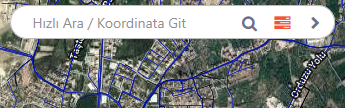
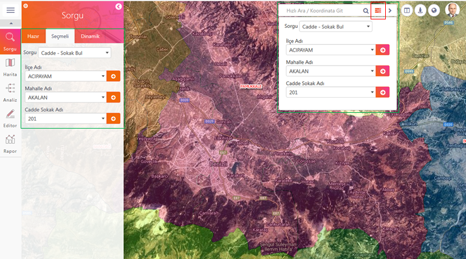

ODAGIS+ Web arayüzünde ekranın orta üst kısmında Hızlı Ara / Koordinata Git arama çubuğu yer almaktadır. Bu arama aracında kelime, rakam veya koordinatlarla dinamik bir şekilde arama yapılabilmektedir.
 Kullanımı:
Kullanımı:
1- Aranacak kelime arama kutusuna yazılır, yanındaki arama butonuna veya klavyeden "Enter" tuşuna basılır.

2- Aranan kelime önceden ayarlanmış tüm veritabanı tabloları ile Google, Bing, Yandex gibi arama motorlarında aranır ve sonuçlar gruplar halinde listelenir.
3- Arama kutusuna X,Y veya Enlem, Boylam değeri yazılarak aranan koordinatı harita üzerinde göstermek mümkündür.
4- Arama kutusuna yazılan kelimenin içinde geçtiği kelimeler alt kısımda listelenir. Bu listede seçilen kelime harita üzerinde gösterilir.
Hızlı arama kutusunun hemen sağ tarafında "Seçmeli Sorgu" butonu bulunmaktadır. Aynı sorgu sol panelde "Seçmeli Sorgu" tabında da bulunmaktadır. (Bknz Seçmeli Sorgu)
